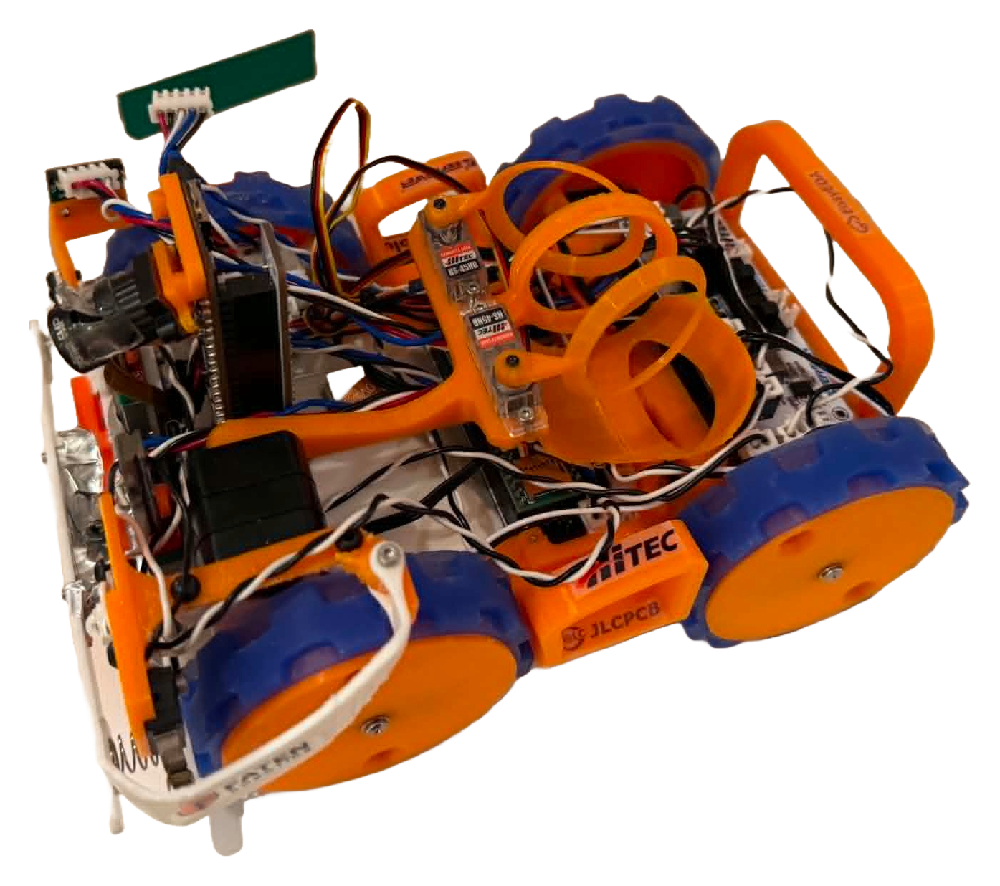

What
I build robots that learn to adapt on their own, at deployment.
Computer Engineering at NYU Tandon. Eleven years of competitive robotics, building since age nine.

Why
I’ve spent my life hardcoding adaptability, into robots and into myself through sports. What excites me is machines that can learn it the way I had to.
-
[WHAT IT TAUGHT ME ABOUT ADAPTABILITY]
-
Every run, the robot meets a field it hasn’t seen. [KEY RESULT]
-
[WHAT IT TAUGHT ME ABOUT ADAPTABILITY]
-
[WHAT IT TAUGHT ME ABOUT ADAPTABILITY]
-
Moving up to the major league, building toward 2027.
-
The first step from hand-written fixes to robots that learn what went wrong.
How
See how I work